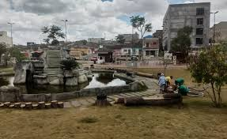

Um ano depois, os moradores dos bairros Santa Edwiges e Centro puderam receber um pulmão verde a florir em meio às construções que se seguem. O espaço, que tem ciclovia, fonte iluminada, ambiente para descanso e lazer e rampas acessíveis, é um dos mais visitados ao longo da semana pelos arapiraquenses que optam por uma boa caminhada ou se exercitar ao ar livre.
